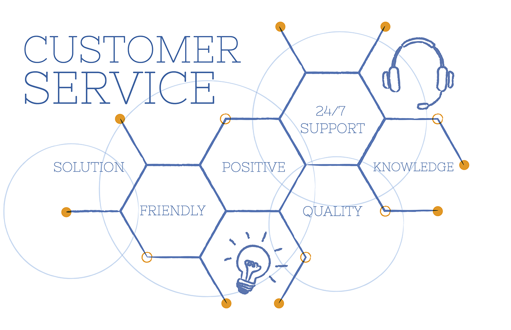

 <section class="track_trace1">
   <div class="row">
     <div class="col-md-4 col-sm-4 col-xs-12 col-lg-6  col-md-push-3">
       <div class="cont_align">
         <h1 class="text_center">Customer Satisfaction</h1>

         <p class="wht_isIOT text_center">

           Our Customer Satisfaction helps to detect the performance levels using appropriate IoT
           devices of your product/service across locations. It unveils the potential to identify inter-relationships
           with external factors such as weather and traffic to ensure a smoother customer experience and optimisation
           of operations amongst your concerned point of sales.

           <br><br>Current application on the IoT Platform is P&P Customer Satisfaction.

         </p>
       </div>
     </div>
     <div class="col-md-4 col-sm-4 col-xs-12 col-lg-6 col-md-push-3 clr_both" id="WhatisIoT">
       <div></div>
     </div>

   </div>


 </section>
